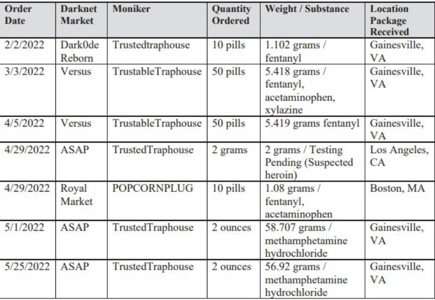
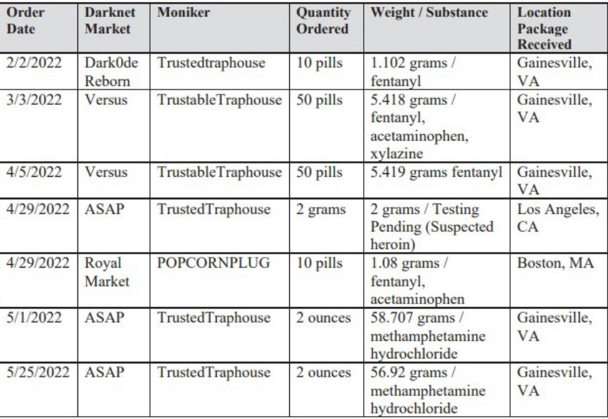

Trio Sentenced for Distributing Counterfeit Oxycodone
~2 min read | Published on 2023-07-15, tagged Darkweb-Vendor, Sentenced using 322 words.
Three Arizona residents that admitted in one of their vendor profiles that the oxycodone pills they were distributing were "not normal OxyCodone 30 mg" were sentenced to a total of over 20 years in prison for their roles in the drug trafficking operation.
According to court documents, 31-year-old Rick Schiffner, 28-year-old Veronica Dittman, and 30-year-old Devin Langer participated in the distribution of counterfeit oxycodone pills, methamphetamine, heroin, and other drugs through the dark web. The trio used multiple vendor profiles including, "TrustedTraphouse," "TrustedTrapper," "TrustedTrap," "TrustableTraphouse," "GoldenTrails," and "PopcornPlug." The vendor accounts operated on multiple dark web markets including ASAP, Bohemia, Tor2Door, ToRReZ, Dark0de, Versus, and others.
During the investigation, the investigators made multiple undercover purchases from the vendor accounts. The purchases allegedly led the agents to a property associated with Schiffner and Langer.

In May 2022, the investigators searched the trash at the property. They reportedly found a notebook with records of orders received by the vendor accounts on different markets. The investigators also seized packaging material similar to those used to package the drugs received during the undercover purchases.
Tracking the bitcoin associated with the TrustableTraphouse vendor profile led the investigators to Schiffner's account at an undisclosed crypto exchange. The credit card used in Schiffner's account was also been linked to Dittman's account at the exchange.
Surveillance conducted at the property associated with Schiffner and Langer revealed that Dittman frequently went to the residence.
The investigators also acquired records of conversations between Schiffner and a federal inmate. They used coded language to discuss Schiffner's drug trafficking operation. In one of the conversations, Schiffner complained that Dittman was lazy and had brought their reviews down.
The investigators arrested Schiffner on August 10, while Langer was arrested on October 6. In April 2023, Schiffner was sentenced to 12 years and a half in prison, while Langer was handed a seven-year prison sentence.
Dittman was sentenced to 5 years in prison on July 14, 2023.
According to court documents, 31-year-old Rick Schiffner, 28-year-old Veronica Dittman, and 30-year-old Devin Langer participated in the distribution of counterfeit oxycodone pills, methamphetamine, heroin, and other drugs through the dark web. The trio used multiple vendor profiles including, "TrustedTraphouse," "TrustedTrapper," "TrustedTrap," "TrustableTraphouse," "GoldenTrails," and "PopcornPlug." The vendor accounts operated on multiple dark web markets including ASAP, Bohemia, Tor2Door, ToRReZ, Dark0de, Versus, and others.
During the investigation, the investigators made multiple undercover purchases from the vendor accounts. The purchases allegedly led the agents to a property associated with Schiffner and Langer.

The undercover purchases
In May 2022, the investigators searched the trash at the property. They reportedly found a notebook with records of orders received by the vendor accounts on different markets. The investigators also seized packaging material similar to those used to package the drugs received during the undercover purchases.
Tracking the bitcoin associated with the TrustableTraphouse vendor profile led the investigators to Schiffner's account at an undisclosed crypto exchange. The credit card used in Schiffner's account was also been linked to Dittman's account at the exchange.
Surveillance conducted at the property associated with Schiffner and Langer revealed that Dittman frequently went to the residence.
Veronica Dittman observed leaving Schiffner's residence
The investigators also acquired records of conversations between Schiffner and a federal inmate. They used coded language to discuss Schiffner's drug trafficking operation. In one of the conversations, Schiffner complained that Dittman was lazy and had brought their reviews down.
The investigators arrested Schiffner on August 10, while Langer was arrested on October 6. In April 2023, Schiffner was sentenced to 12 years and a half in prison, while Langer was handed a seven-year prison sentence.
Dittman was sentenced to 5 years in prison on July 14, 2023.